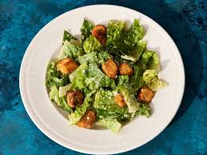

Classic Caesar Salad

Description of the salad
This classic salad is a crisp and refreshing dish, featuring romaine lettuce tossed with creamy Caesar dressing, crunchy croutons, and a sprinkle of Parmesan cheese.
Often garnished with freshly cracked pepper and a hint of lemon, it's a simple yet flavorful staple.
Ingredients
Dressing:
- 3 anchovy fillets
- 2 cloves garlic, finely chopped
- ½ lemon, juiced
- 2 tablespoons red wine vinegar
- 1 large egg yolk
- 1 tablespoon Dijon mustard
- 1 dash Worcestershire sauce
- ¼ cup olive oil
- salt and ground black pepper to taste
Salad:
- ½ head romaine lettuce, chopped
- ¼ cup grated Parmesan cheese
- 2 tablespoons croutons
Steps
- Gather all ingredients.
- To make the dressing: Mash anchovy fillets and garlic in a large salad bowl. Add lemon juice, red wine vinegar, Dijon mustard, egg yolk, and Worcestershire sauce; whisk until smooth and creamy. Gradually stream in olive oil while whisking constantly. Season with salt and black pepper.
- Make salad: Gently mix romaine lettuce and Parmesan cheese into dressing until thoroughly coated.
- Serve salad topped with croutons.
Done!